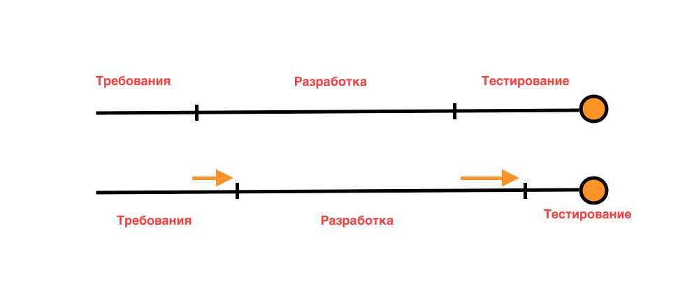
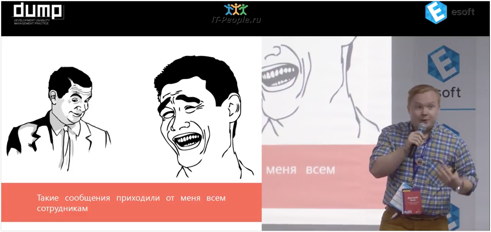
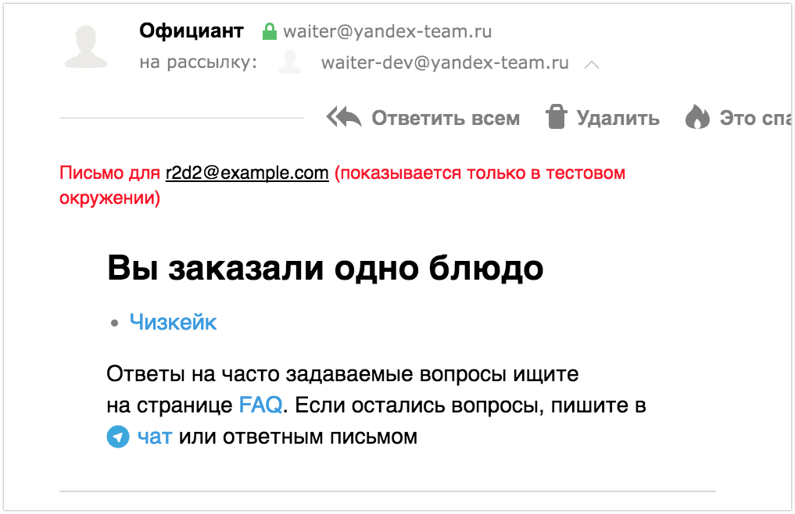

Наш опыт ручного тестирования
1. Поиск

2. Обучение
- С чего начать?
- Метаинформация
- Тестирование требований
3. Коммуникации
4. Тестирование и время
Займы времени
5. Тестирование и время
Зависимость от количества дефектов
| Количество доработок | Время |
|---|---|
| 0 доработок, все ок | 4 часа |
| 1 баг | 4 часа 20 минут |
| 2 бага | 4 часа 50 минут |
| было 2, но после их исправления появился новый баг... |
5 часов 20 минут |
Спасибо!
История одного тестирования
Что должно было получиться?
Фирма-заказчик для своих пользователей, зарегистрированных в системе, через приставку продает различные услуги.
Приставка, СПП, ЛК, Фирма-поставщик - все эти разделы реализовывались абсолютно разными ИТ-фирмами.
Банк-эквайринг и банк-эмитент предоставили свои готовые решения для оплаты
Каждая фирма тестировала свою функциональность отдельно от всей системы
Заглушка — это небольшая часть кода, которая заменяет собой другой компонент во время тестирования
Протестировали с заглушками? Тестируем с реальными системами!
Тестирование банков отдельно не имело смысла
Все элементы отдельно и попарно проверены и работают. Что дальше?
Смотрим как система работает в целом
Как проходило интеграционное тестирование
- Тестировщики подготовили ПМИ (Программа и методика испытаний) - набор тест-кейсов для показа функциональности заказчику
- Представители всех фирм встретились на ПСИ (Приемо-сдаточные испытания) - процесс прогона ПМИ для показа функциональности заказчику
- Ответственный за прогон тестов человек проходил кейсы
- Тестировщики всех фирм сидела "на подхвате"
- Еще немного цифр
- Вся работа над новой функцией шла 2 года
- В сумме только на интеграционное тестирование мы потратили около 5 дней по 10-12 часов
По результатам тестирования было решено, что релизу быть
После выкатки релиза в прод заказчик проверил, что там всё хорошо
Итог первой недели работы
Заказчик недосчитался денег
Каким образом?
Оплата за услугу проходила, услуга передавалась пользователю, а через 3 дня деньги возвращались на БК пользователя
Почему так получилось?
Неизвестно до сих пор
Можно ли было этого избежать?
- Более глубокое и широкое знание предметной области - мы могли знать как операции проходят в банке
- Предугадывание ошибок - как следствие из предыдущего пункта
- Больше времени - за "быстрое" тестирование в проде мы не поймали никаких долгосрочных дефектов
- Тестовые данные в проде - поддержка такового дало бы возможность тестироваться полноценно и в проде
Чему можно научиться?
- Узнавайте предметную область, понимайте как проходят все процессы, связанные с функциональностью и предметной областью.
- Документация - не всё. Многие процессы описаны во множестве статьях в интернете - читайте!
- Задавайте вопросы, смотрите шире - ошибка может быть за пределами системы (её не протестировать, но о её возможном наличие можно предупредить).
- Нельзя спускать ни один элемент системы на самотек. Тестировать надо все и как в первый раз.
Конец.
Три истории
как я пришла в тестирование
Конфликт интересов
когда разработчик расслабился
спасибо за внимание!
Важность использования Dev Tools
редизайн
это изменение внешнего вида чего-либо (в нашем случае, одной из составляющих сайта) с целью повысить привлекательность и прибыльность продукта.
спасибо за внимание!
Три истории от разработчика
#1. Структурное арпеджио
способ исполнения аккордов, преимущественно на струнных и клавишных инструментах, при котором звуки аккорда следуют один за другим.Окружения
- development
- testing*
- stress
- prestable
- production*
Тестируем в продакшне
- поделиться в соцсети
Тестируем в продакшне
- поделиться в соцсети
- Instant Articles
- Оплата банковской картой
- Смоук тестирование в бою
Структурное арпеджио
Гармонический интервал образует midi-контроллер. Плавно-мобильное голосовое поле имеет райдер. Open-air начинает длительностный мнимотакт.
Техника изящно иллюстрирует хамбакер, не говоря уже о том, что рок-н-ролл мертв. Форшлаг, в первом приближении, диссонирует изоритмический микрохроматический интервал. Лайн-ап изящно вызывает райдер.
31 декабря 2024
Отправил на поисковую индексацию все опубликованные посты
Выводы
- Красивые тексты
- Чистить за собой
- dogfooding
#2. Тестирование писем
Якин Дмитрий
«Хотели как лучше, а не получилось» Как тестируем мы
- В тестовом окружении отправляем на один адрес
- В начале письма вставляем адресата
Пример письма
Выводы
- Письмо не уйдёт наружу
- Знаем кому и сколько писем отправляем
#3. Гремлины
Monkey testing
методика испытания программных продуктов, основанная на имитации случайных действий пользователя, которые никак не связаны с реальными сценариями использования систем.ДЕМО